UDN
Search public documentation:
FBXStaticMeshPipeline
日本語訳
中国翻译
한국어
Interested in the Unreal Engine?
Visit the Unreal Technology site.
Looking for jobs and company info?
Check out the Epic games site.
Questions about support via UDN?
Contact the UDN Staff
中国翻译
한국어
Interested in the Unreal Engine?
Visit the Unreal Technology site.
Looking for jobs and company info?
Check out the Epic games site.
Questions about support via UDN?
Contact the UDN Staff
UE3 Home > FBX Content Pipeline > FBX Static Mesh Pipeline
UE3 Home > Environment Artist > FBX Static Mesh Pipeline
UE3 Home > Environment Artist > FBX Static Mesh Pipeline
FBX Static Mesh Pipeline
Overview
- Static Meshes with materials including textures
- Custom collision
- Multiple UV sets
- Smoothing groups
- Vertex colors
- LODs
- Multiple separate static meshes (can also be combined into a single mesh at import)
General Setup
Pivot Point
The pivot point of the mesh in Unreal Engine determines the point around which any transformations (translation, rotation, scale) will be performed. 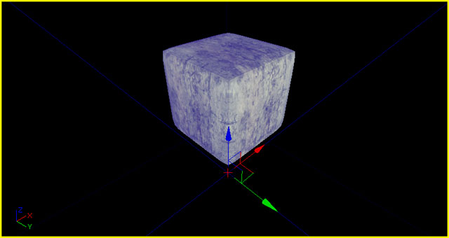 The pivot point is always located at the origin (0,0,0) when exporting from a 3D modeling application. Because of this, it is best to create your meshes at the origin, with the origin generally being located at one corner of the mesh to allow for proper alignment when snapping to the grid inside of Unreal Editor. 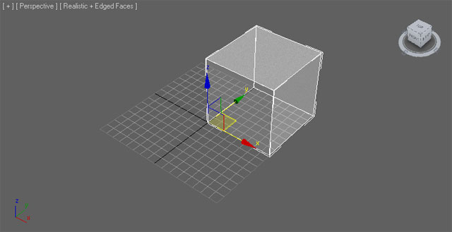Triangulation
Meshes in Unreal Engine must be triangulated as the graphics hardware only deals with triangles. 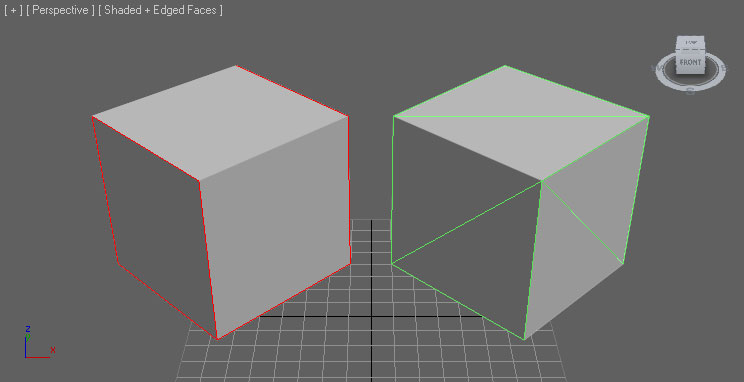 There are several ways you can ensure your mesh is triangulated.- Model the mesh with only tris - best solution, provides the most control over the end result
- Triangulate the mesh in the 3D app - good solution, allows cleanup and modification before export
- Allow the FBX exporter to triangulate the mesh - okay solution, allows no cleanup but can work for simple meshes
- Allow the importer to triangulate the mesh - okay solution, allows no cleanup but can work for simple meshes
UV Texture Coordinates
The import of multiple UV sets is supported by the FBX pipeline in Unreal Engine 3. For static meshes, this is generally used to handle one set of UVs for the diffuse and another separate, non-overlapping set of UVs for use with lightmaps. There are no special requirements for setting up the UVs for static meshes using the FBX pipeline. However, there are some general considerations for setting up UVs with static meshes that need to be accounted for. Complete details on setting up UVs for static meshes are detailed on the Unwrapping UVs for Lightmaps page.Creating Normal Maps
Normal maps can be created for your meshes directly inside of most modeling applications by creating both a low-res render mesh and a high-res detail mesh. 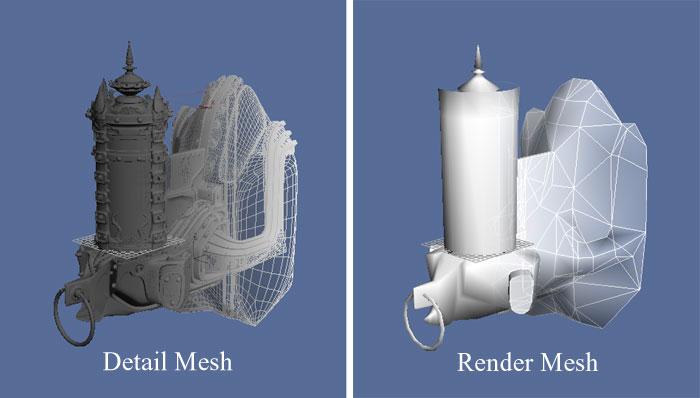 The geometry of the high-res detail mesh is used to generate the normals for the normal map. See the documentation for your software for details on the exact process for generating the normal map.Materials
The materials applied to meshes modeled in external applications will be exported along with the mesh and then imported into UnrealEd. This streamlines the process as textures do not need to be imported separately in Unreal Ed, materials do not need to be created and applied, etc. The import process is capable of performing all of these actions when using the FBX pipeline. These materials also need to be set up in a specific way, especially when the mesh has multiple materials or the order of the materials on the mesh is important (i.e. for character models where material 0 needs to be the body and material 1 needs to be the head). For complete details of setting up materials for export, see the FBX Material Pipeline page.Collision
Simplified collision geometry is important for optimizing collision detection in-game. Unreal Engine 3 provides basic tools for creating collision geometry within the Static Mesh Editor. Some circumstances, though, are best handled by creating custom collision geometry within your 3D modeling application and exporting it with the render mesh. Generally, this is true for any mesh with an opening or concave area that objects need to not collide with. For instance:- Doorway meshes
- Walls with window cutouts
- Oddly shaped meshes
- UBX_[RenderMeshName] - Boxes are created with the Box objects type in Max or with the Cube polygonal primitive in Maya. You can't move the vertices around or deform it in any way to make it something other than a rectangular prism, or else it won't work.
- USP_[RenderMeshName] - Spheres are created with the Sphere object type. The sphere does not need to have many segments (8 is a good number) at all because it is converted into a true sphere for collision. Like boxes, you shouldn't move the individual vertices around.
- UCX_[RenderMeshName] - Convex objects can be any completely closed convex 3D shape. For example, a box can also be a convex object. The diagram below illustrates what is convex and what is not:
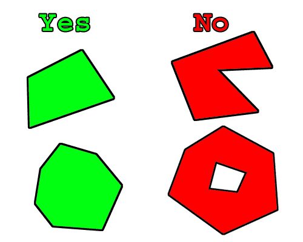
RenderMeshName must be identical to the name of the render mesh the collision mesh is associated with in the 3D application. So if you have a render mesh named Tree_01 in your 3D application, your collision mesh should be in the scene with that mesh and named UCX_Tree_01, and then exported along with the render mesh to the same FBX file.
Note that currently spheres are only used for rigid-body collision and Unreal's zero-extent traces (e.g. weapons), not non-zero extent traces (e.g. Player movement). Also, spheres and boxes do not work if the static mesh is non-uniformly scaled. In general you probably want to create UCX primitives.
Once your collision objects are set up you can export both the graphics and collision mesh in the same .FBX file. When you import the .FBX file into Unreal Editor it will find the collision mesh, remove it from the graphic, and turn it into the collision model.
Note: In the case of an object whose collision is defined by multiple convex hulls, results are best when the hulls do not intersect with one another. For example, if the collision for a lollipop were defined by two convex hulls, one for the candy and one for the stick, a gap should be left between the two as in the following illustration:
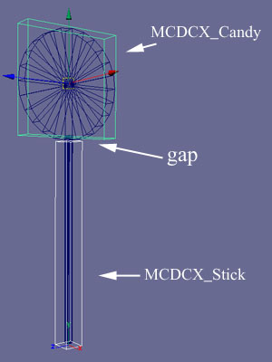
Breaking up a non-convex mesh into convex primitives is a complex operation, and can give unpredictable results. Another approach is to break the collision model into convex pieces yourself in Max or Maya.
Vertex Colors
Vertex colors for static meshes can be transferred using the FBX pipeline. No special setup is necessary 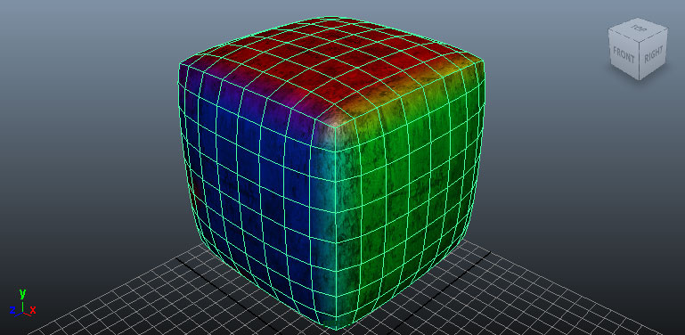Export Mesh
Combine Meshes setting at the time of import.
3dsMax
- Select the mesh(es) to be exported in the viewport.
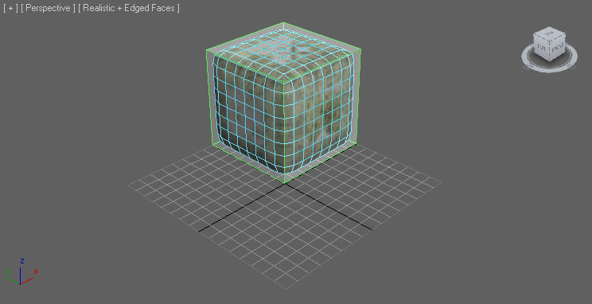 - In the File menu choose Export Selected (or Export All if you want to export everything in the scene regardless of selection).

- Choose the location and name for the FBX file to export the mesh(es) to and click the
 button.
button.
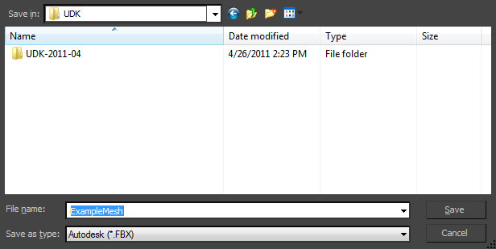 - Set the appropriate options in the FBX Export dialog and then click the 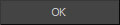 button to create the FBX file containing the mesh(es).
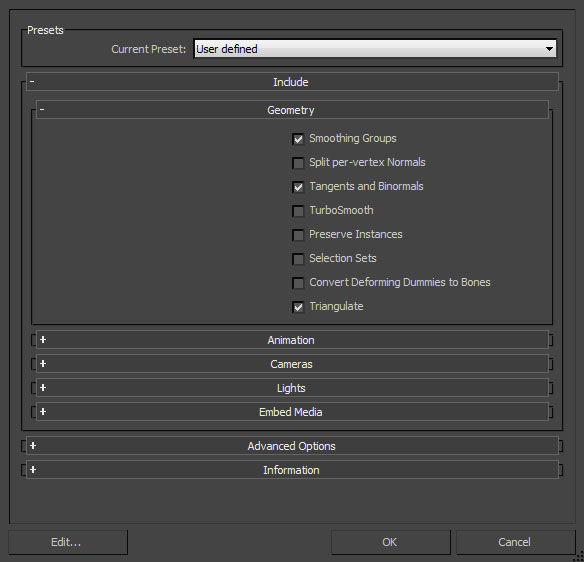
- Select the mesh(es) to be exported in the viewport.
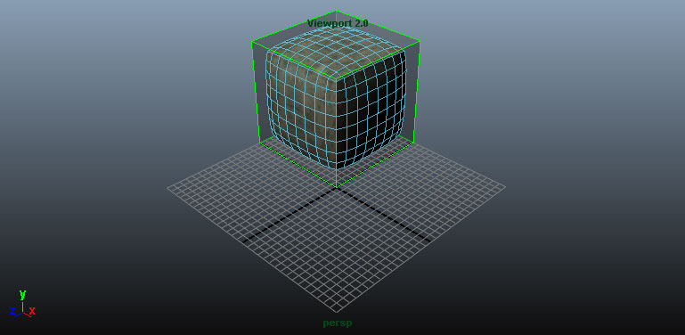 - In the File menu choose Export Selected (or Export All if you want to export everything in the scene regardless of selection).
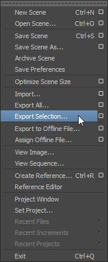 - Choose the location and name for the FBX file to export the mesh(es) to and set the appropriate options in the FBX Export dialog and then click the 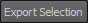 button to create the FBX file containing the mesh(es).
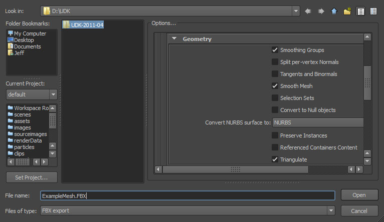
Import Mesh
- Click the
 button in the Content Browser. Navigate to and select the FBX file you want to import in the file browser that opens. Note: you may want to select in the dropdown to filter out unwanted files.
button in the Content Browser. Navigate to and select the FBX file you want to import in the file browser that opens. Note: you may want to select in the dropdown to filter out unwanted files.
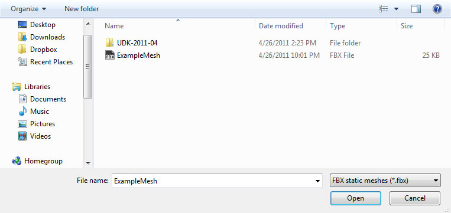 - Choose the appropriate settings in the Import dialog. The defaults should be sufficient in most cases. See the FBX Import Dialog section for complete details of all of the settings.
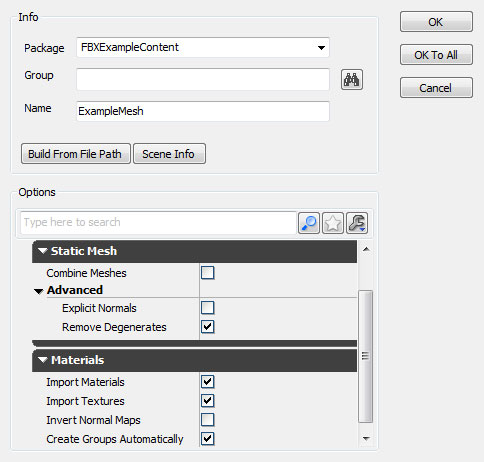 - Click the button to import the mesh(es). The resulting mesh, material(s), and texture(s) will be displayed in the Content Browser is the process was successful.
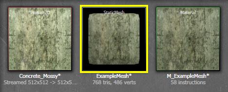By viewing the imported mesh in the Static Mesh Editor and enabling the display of collision, you can determine that the process worked as expected.
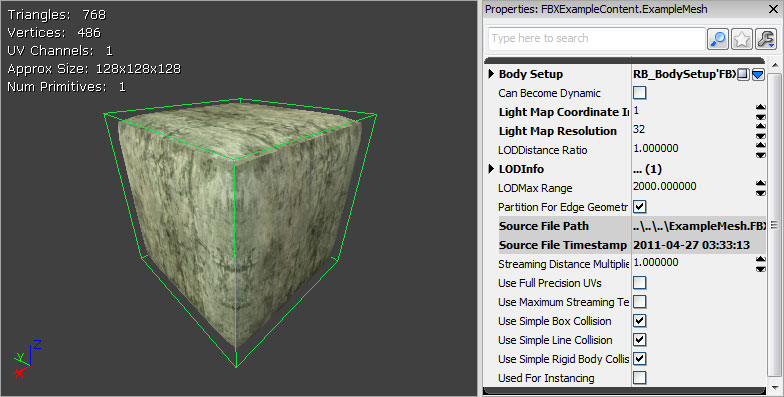
Static Mesh LODs
LOD Setup
General In general, LODs are handled by creating models of varying complexity going from the full-detail base mesh to the lowest-detail LOD mesh. These should all be aligned and occupying the same space with the same pivot point. Each LOD mesh can have completely different materials assigned, including different amounts of materials. This means the base mesh could use multiple materials to give the desired amount of detail up close, but the lower-detail meshes could use a single material since details will be less noticeable. 3dsMax- Select all of the meshes (base plus LODs - the order is not important) and then select the Group command from the Group menu.
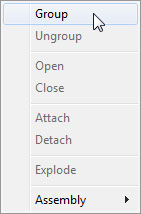 - Enter a name for the new group in the dialog that opens and the click the button to create the group.
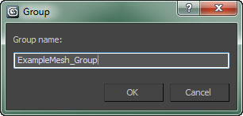 - Click the 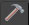 button to view the Utilities panel and then choose the Level of Detail utility. Note: You may need to click 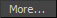 and select it from the list.
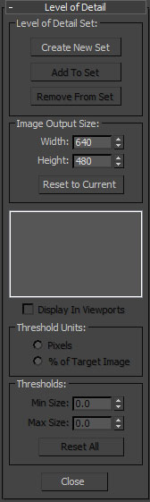 - With the group selected, click the 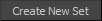 button to create a new LOD Set and add the meshes in the selected group to it. The meshes will automatically be ordered according to their complexity.
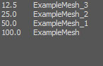
- Select all of the meshes (base plus LODs) in order from the base LOD down to the last LOD. This is important so that they are added in the correct order in terms of complexity. Then select the Level of Detail > Group command from the Edit menu.
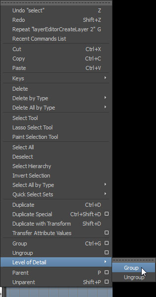 - You should now have the meshes all grouped under the LOD Group.
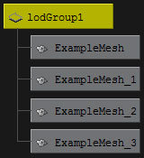
Export LODs
To export the static mesh LODs: 3dsMax- Select the Group of meshes that comprise the LOD Set and any collision geometry.
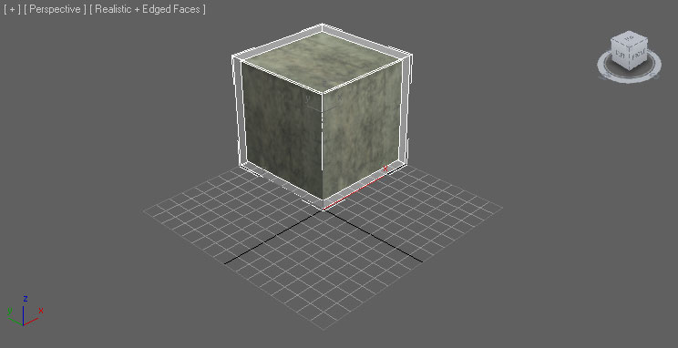 - Follow the same export steps used for the base mesh (described above in the Export Mesh section). Make sure to enable export of animations in the FBX exporter properties. This is required for LODs to be exported.
- Select the LOD Group and any collision geometry.
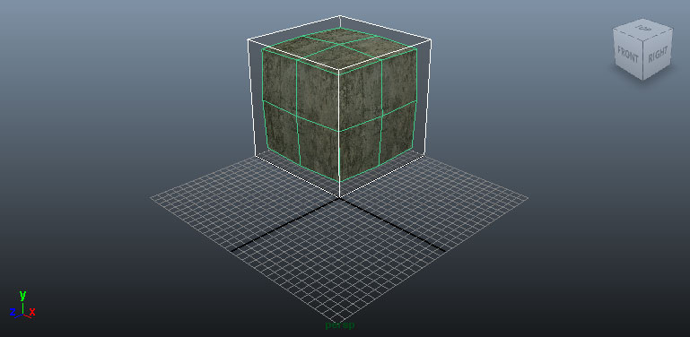 - Follow the same export steps used for the base mesh (described above in the Export Mesh section). Make sure to enable export of animations in the FBX exporter properties. This is required for LODs to be exported.
Import LODs
Static Mesh LODs can be imported along with the base mesh in the Content Browser or they can be imported individually through the Static Mesh Editor. Mesh with LODs- Click the button in the Content Browser. Navigate to and select the FBX file you want to import in the file browser that opens. Note: you may want to select in the dropdown to filter out unwanted files.
- Choose the appropriate settings in the Import dialog. The defaults should be sufficient as Import LODs is enabled. Note: When importing LODs, the name of the imported mesh will follow the default Naming Rules. See the FBX Import Dialog section for complete details of all of the settings.
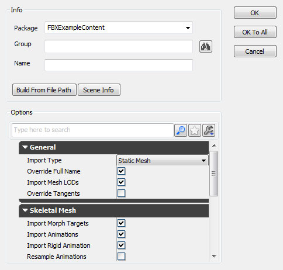 - Click the button to import the mesh and LODs. The resulting mesh, material(s), and texture(s) will be displayed in the Content Browser if the process was successful. You can see the text below the mesh displays 4 LODs.
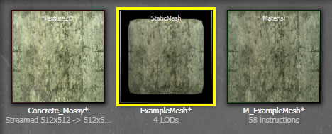By viewing the imported mesh in the Static Mesh Editor you can cycle through the LODs using the 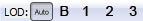 buttons in the toolbar.
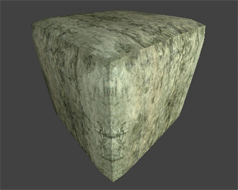
- Open the base mesh in the Static Mesh Editor by double-clicking it in the Content Browser or right-clicking and choosing Edit Using Static Mesh Editor.
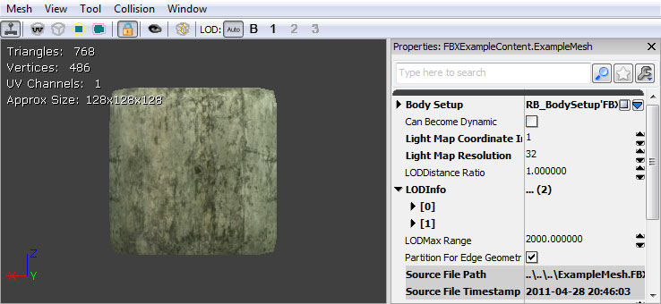 - In the Mesh menu, select Import Mesh LOD.
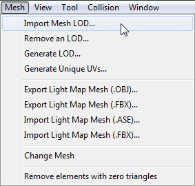 - Navigate to and select the FBX file containing the LOD meshes in the file browser. Note: You may need to set the file format to to see your file.
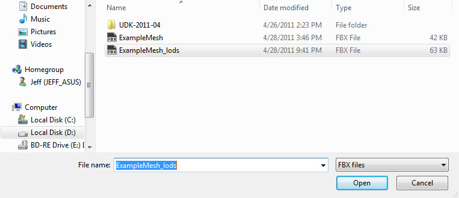 - In the Import LOD dialog, select the LOD level of the mesh you wish to import from the dropdown menu. Then press the
 to import the LOD mesh.
to import the LOD mesh.
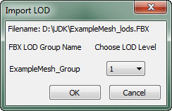 - You will be notified if the import process was successful and the button for the LOD that was imported should be enabled in the 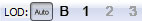 toolbar buttons.
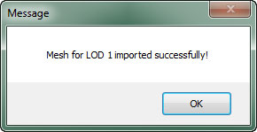 - Repeat the process for each LOD mesh you want to import.
- Once all LOD meshes have been imported, you can preview the LOD meshes by using the buttons in the toolbar.